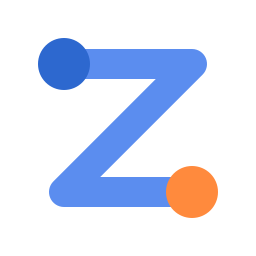
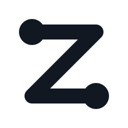
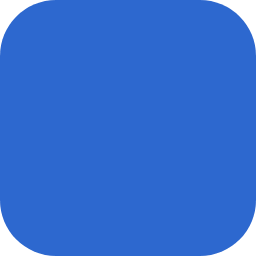
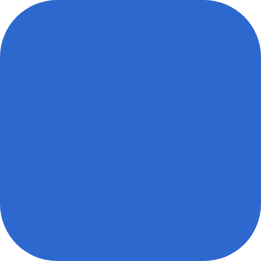
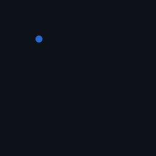
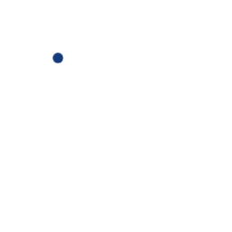

eztraefik logo, final files
Everything in final/. Concept C, deep blue start: dark origin, blue route, orange destination.
SVG, animated once
Plays once when the file loads. Reload the page or press Replay to see it again.
lockup-light-animated.svgsymbol-light-animated.svgicon-light-animated.svgwordmark-light-animated.svglockup-dark-animated.svg
symbol-dark-animated.svgicon-dark-animated.svgwordmark-dark-animated.svg SVG, animated loop
Repeats every 3.2 s. For showcases; the once version is better on real pages.
lockup-light-loop.svgsymbol-light-loop.svgicon-light-loop.svgwordmark-light-loop.svglockup-dark-loop.svgsymbol-dark-loop.svgicon-dark-loop.svgwordmark-dark-loop.svg
SVG, static masters
Filled shapes only: no strokes, no fonts needed. Use these in print and design tools.
lockup-light.svgsymbol-light.svgicon-light.svgicon-light-square.svgwordmark-light.svglockup-dark.svg
symbol-dark.svgicon-dark.svgicon-dark-square.svgwordmark-dark.svglockup-mono-black.svglockup-mono-white.svg
symbol-mono-black.svg
symbol-mono-white.svg GIF
Looping, 25 fps, on a solid background (white for light, #0D1219 for dark). For places that can't show SVG.
icon-dark-256.gificon-dark-512.gif
icon-light-256.gif
icon-light-512.giflockup-dark-1200.giflockup-dark-600.giflockup-light-1200.giflockup-light-600.gif
symbol-dark-256.gifsymbol-dark-512.gif
symbol-light-256.gifsymbol-light-512.gifwordmark-dark-800.gifwordmark-light-800.gif PNG
Transparent. Symbols and icons at 16 to 2048 px, lockups 32 to 1024 px high, wordmarks 32 to 512 px high. A selection is shown at true size.
icon-light-16.pngicon-light-32.pngicon-light-48.pngicon-light-64.pngicon-light-128.pngicon-light-256.pngicon-light-512.pngsymbol-light-16.pngsymbol-dark-16.pngsymbol-light-32.pngsymbol-dark-32.pngsymbol-light-64.pngsymbol-dark-64.pngsymbol-light-128.pngsymbol-dark-128.pnglockup-light-32h.pnglockup-light-64h.pnglockup-light-128h.png
Web and platform icons
favicon.ico (16 / 32 / 48), favicon.svg, Apple touch icon, Android / PWA icons, site.webmanifest, head-snippet.html, Docker Hub avatar.
 favicon-32.pngapple-touch-icon.pngicon-192.pngicon-maskable-512.pngdockerhub-avatar-1024.png
favicon-32.pngapple-touch-icon.pngicon-192.pngicon-maskable-512.pngdockerhub-avatar-1024.png